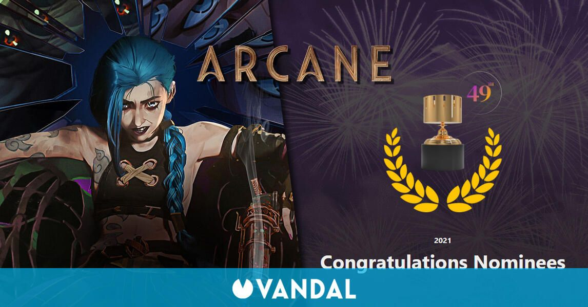

Premios y Nominaciones
"Arcane" se ha convertido en la primera serie de televisión en streaming basada en un videojuego, así como la primera adaptación de un videojuego en ganar tanto los Premios Annie como los Premios Primetime Emmy. Fue la primera serie en streaming en ganar la mayor cantidad de premios de las mismas nominaciones en un solo año y en arrasar en los Annie con nueve premios. Además, ganó el premio a Mejor Programa Animado en los Primetime Emmy, convirtiéndose en la primera serie de Netflix en hacerlo. También ganó la categoría inaugural de Mejor Adaptación (otorgada a medios basados en videojuegos) en The Game Awards 2022.
| Año | Premio | Categoría | Nominado(s) | Resultado |
|---|---|---|---|---|
| 2022 | Festival Internacional de Cine de Animación de Annecy | Mejor Producción de Televisión | "When These Walls Come Tumbling Down" | Nominada |
| 2022 | Premios Annie | Mejor Producción de Televisión/Transmisión Animada para Audiencia General | "When These Walls Come Tumbling Down" | Ganadora |
| 2022 | Premios Annie | Logro Sobresaliente en Efectos Animados en una Producción de Televisión/Transmisión Animada | Guillaume Degroote, Aurélien Ressencourt, Martin Touzé, Frédéric Macé, y Jérôme Dupré (por "Oil and Water") | Ganadora |
| 2022 | Premios Annie | Logro Sobresaliente en Animación de Personajes en una Producción de Televisión/Transmisión Animada | Léa Chervet (por "The Monster You Created") | Ganadora |
| 2022 | Premios Annie | Logro Sobresaliente en Diseño de Personajes en una Producción de Televisión/Transmisión Animada | Evan Monteiro (por "Some Mysteries Better Left Unsolved") | Ganadora |
| 2022 | Premios Annie | Logro Sobresaliente en Dirección en una Producción de Televisión/Transmisión Animada | Pascal Charrue, Arnaud Delord, y Barthelemy Maunoury (por "The Monster You Created") | Ganadora |
| 2022 | Premios Annie | Logro Sobresaliente en Diseño de Producción en una Producción de Televisión/Transmisión Animada | Julien Georgel, Aymeric Kevin, y Arnaud Baudry (por "Happy Progress Day!") | Ganadora |
| 2022 | Premios Annie | Logro Sobresaliente en Storyboarding en una Producción de Televisión/Transmisión Animada | Simon Andriveau (por "When These Walls Come Tumbling Down") | Ganadora |
| 2022 | Premios Annie | Logro Sobresaliente en Actuación de Voz en una Producción de Televisión/Transmisión Animada | Ella Purnell (por "When These Walls Come Tumbling Down") | Ganadora |
| 2022 | Premios Annie | Logro Sobresaliente en Escritura en una Producción de Televisión/Transmisión Animada | Christian Linke y Alex Yee (por "The Monster You Created") | Ganadora |
| 2022 | Premios Billboard Music | Mejor Banda Sonora | Varios Artistas | Nominada |
| 2022 | Premios Cut Above de Editores de Cine Británicos | Mejor Serie Editada: Animación | Ivan Bilancio, Gilad Carmel, Roberto Fernandez, Lawrence Gan, Martin Jay, Benjamin Massoubre, Ernesto Matamoros Cox, Nazim Meslem, Emmanuel Pilinski, y David Ian Salter | Ganadora |
| 2022 | Premios Dorian | Mejor Show Animado | "Arcane" | Nominada |
| 2022 | Premios Golden Reel | Logro Sobresaliente en Edición de Sonido – Animación No Teatral | Brad Beaumont, Eliot Connors, Alexander Temple, Shannon Beaumont, Alexander Ephraim, Dan O' Connell, John Cucci, y Alex Seaver (por "When These Walls Come Tumbling Down") | Ganadora |
| 2022 | Premios de la Asociación de Críticos de Hollywood | Mejor Serie Animada en Streaming o Película de Televisión | "Arcane" | Ganadora |
| 2022 | Premios Hugo | Mejor Presentación Dramática, Forma Corta | Christian Linke, Alex Yee, Conor Sheehy, Ash Brannon, Pascal Charrue, y Arnaud Delord (por "The Monster You Created") | Nominada |
| 2022 | Premios Primetime Emmy | Programa Animado Sobresaliente | Christian Linke, Marc Merrill, Brandon Beck, Jane Chung, Thomas Vu, Jerôme Combe, Melinda Wunsch Dilger, Pascal Charrue, Arnaud Delord, Alex Yee, Ash Brannon, Conor Sheehy, Barthelemy Maunoury, y David Lyerly (por "When These Walls Come Tumbling Down") | Ganadora |
| 2022 | Premios Primetime Emmy | Logro Sobresaliente en Edición de Sonido para una Serie de Comedia o Drama (Media Hora) y Animación | Brad Beaumont, Eliot Connors, Shannon Beaumont, Alex Ephraim, Alexander Temple, Alex Seaver, Dan O'Connel, y John Cucci (por "When These Walls Come Tumbling Down") | Nominada |
| 2022 | Premios Primetime Emmy | Logro Sobresaliente Individual en Animación | Bruno Couchinho (diseñador de fondos) (por "When These Walls Come Tumbling Down") | Ganadora |
| 2022 | Premios Primetime Emmy | Logro Sobresaliente Individual en Animación | Julien Georgel (dirección de arte) (por "Happy Progress Day!") | Ganadora |
| 2022 | Premios Primetime Emmy | Logro Sobresaliente Individual en Animación | Anne-Laure To (artista de guiones de color) (por "The Boy Savior") | Ganadora |
| 2022 | Premios Saturn | Mejor Serie Animada en Televisión | "Arcane" | Nominada |
| 2022 | The Game Awards | Mejor Adaptación | "Arcane" | Ganadora |
